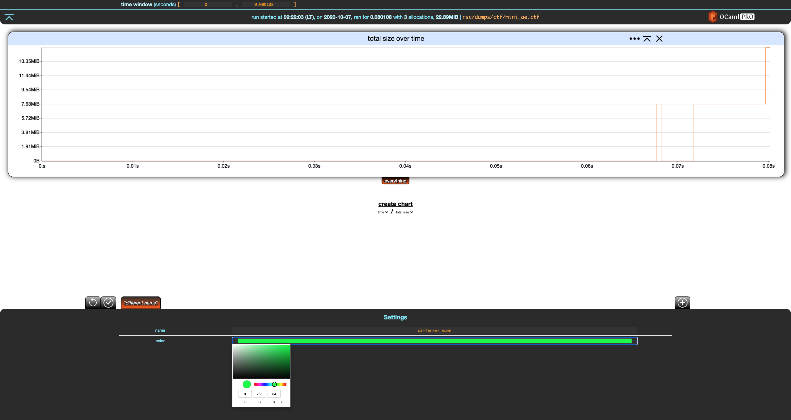
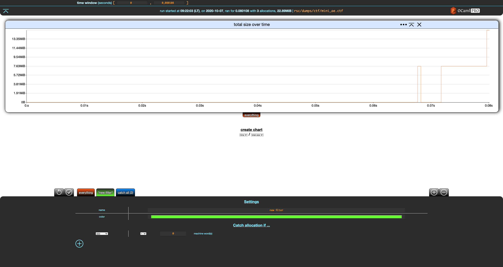
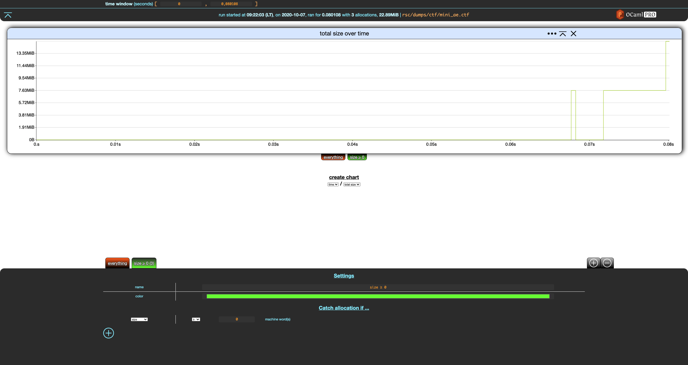
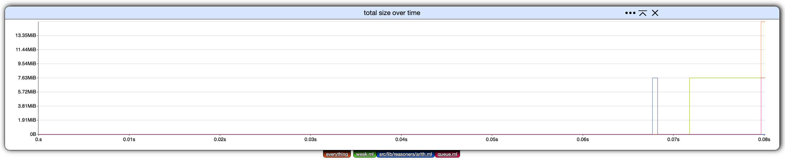
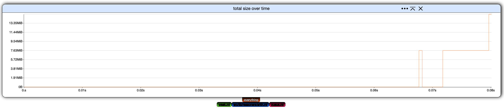
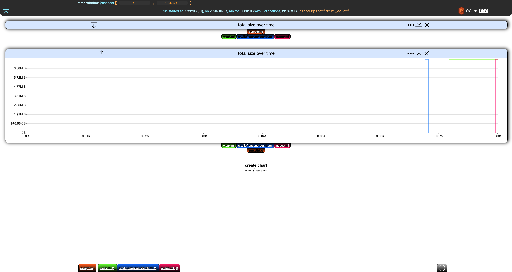
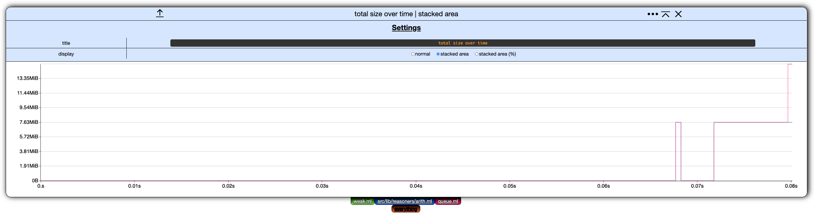

Introduction
Memthol is a visualizer and analyzer for program profiling. It works on memory dumps containing information about the size and (de)allocation date of (some of) the allocations performed by some execution of a program.
For information regarding building memthol, features, browser compatibility... refer to the memthol repository.
This tutorial deals with the BUI (Browser User Interface) aspect of the profiling. How the dumps are generated is outside of the scope of this document. Currently, memthol accepts memory dumps produced by Memtrace (github repository here). A memtrace dump for a program execution is a single Common Trace Format (CTF) file.
This tutorial uses CTF files from the memthol repository. All paths mentioned in the examples are from its root.
Memthol is written in Rust and is composed of
- a server, written in pure Rust, and
- a client, written in Rust and compiled to web assembly.
The server contains the client, which it will serve at some address on some port when launched.
Running Memthol
Memthol must be given a path to a CTF file generated by memtrace.
> ls rsc/dumps/ctf/flamba.ctf
rsc/dumps/ctf/flamba.ctf
> memthol rsc/dumps/ctf/flamba.ctf
|===| Starting
| url: http://localhost:7878
| target: `rsc/dumps/ctf/flamba.ctf`
|===|
Basics
Our running example in this section will be rsc/dumps/mini_ae.ctf:
❯ memthol --filter_gen none rsc/dumps/ctf/mini_ae.ctf
|===| Starting
| url: http://localhost:7878
| target: `rsc/dumps/ctf/mini_ae.ctf`
|===|
Notice the odd --filter_gen none passed to memthol. Ignore it for now, it will be discussed later
in this section.
Once memthol is running, http://localhost:7878/ (here) will lead you to memthol's BUI, which
should look something like this:

Click on the orange everything tab at the bottom left of the screen.

Memthol's interface is split in three parts:
-
the central, main part displays charts. There is only one here, showing the evolution of the program's total memory size over time based on the memory dump.
-
the header gives statistics about the memory dump and handles general settings. There is currently only one, the time window.
-
the footer controls your filters (there is only one here), which we are going to discuss right now.
Filters
Filters allow to split allocations and display them separately. A filter is essentially a set of allocations. Memthol has two built-in filters. The first one is the everything filter. You cannot really do anything with it except for changing its name and color using the filter settings in the footer.

Notice that when a filter is modified, two buttons appear in the top-left part of the footer. The first reverts the changes while the second one saves them. Let's save these changes.

The everything filter always contains all allocations in the memory dump. It cannot be changed besides the cosmetic changes we just did. These changes are reverted in the rest of the section.
Custom Filters
Let's create a new filter using the + add button in the top-right part of the footer.

Notice that, unlike everything, the settings for our new filter have a Catch allocation if
... (empty) section with a + add button. Let's click on that.

This adds a criterion to our filter. Let's modify it so that the our filter catches everything of size greater than zero machine words, rename the filter, and save these changes.

The tab for our filter now shows (3) next to its name, indicating that this filter catches 3 allocations, which is all the allocations of the (tiny) dump.
Now, create a new filter and modify it so that it catches allocations made in file weak.ml. This requires
-
creating a filter,
-
adding a criterion to that filter,
-
switching it from
sizetocallstack -
removing the trailing
**(anything) by erasing it, -
write
weak.mlas the last file that should appear in the callstack.
After saving it, you should get the following.

Sadly, this filter does not match anything, although some allocations fit this filter. This is
because a custom filter F "catches" an allocation if
- all of the criteria of
Fare true for this allocation, and - the allocation is not caught by any custom filter at the left of
F(note that the everything filter is not a **custom filter).
In other words, all allocations go through the list of custom filters from left to right, and are caught by the first filter such that all of its criteria are true for this allocation. As such, it is similar to switch/case and pattern matching.
Let's move our new filter to the left by clicking the left arrow next to it, and save the change.

Nice.
You can remove a filter by selecting it and clicking the - remove button in the top-right part of
the footer, next to the + add filter button. This only works for custom filters, you cannot
remove built-in filters.
Now, remove the first filter we created (size ≥ 0), which should give you this:

Out of nowhere, we get the second and last built-in filter: catch-all. When some allocations are not caught by any of your filters, they will end up in this filter. Catch-all is not visible when it does not catch any allocation, which is why it was (mostly) not visible until now. The filter we wrote previously where catching all the allocations.
In the switch/case analogy, catch-all is the
else/defaultbranch. In pattern matching, it would be a trailing wildcard_.
So, weak.ml only catches one of the three allocations: catch-all appears and indicates it
matches the remaining two.
It is also possible to write filter criteria over allocations' callstacks. This is discussed in the Callstack Filters Section.
Filter Generation
When we launched this section's running example, we passed --filter_gen none to memthol. This is
because, by default, memthol will run automatic filter generation which scans allocations and
generates filters. The default (and currently only) one creates one filter per allocation-site file.
For more details, in particular filter generation customization, run
memthol --filter_gen help.
If we relaunch the example without --filter_gen none
❯ memthol rsc/dumps/ctf/mini_ae.ctf
|===| Starting
| url: http://localhost:7878
| target: `rsc/dumps/ctf/mini_ae.ctf`
|===|
we get something like this (actual colors may vary):

Charts
This section uses the same running example as the last section.
❯ memthol rsc/dumps/ctf/mini_ae.ctf
|===| Starting
| url: http://localhost:7878
| target: `rsc/dumps/ctf/mini_ae.ctf`
|===|
Filter Toggling
The first way to interact with a chart is to (de)activate filters. Each chart has its own filter tabs allowing to toggle filters on/off.
From the initial settings

click on all filters but everything to toggle them off.

Let's create a new chart. The only kind of chart that can be constructed currently is total size over time, so click on create chart below our current, lone chart.

Deactivate everything in the second chart.

Nice. We now have the overall total size over time in the first chart, and the details for each filter in the second one.
Next, notice that both charts have, on the left of their title, a down (first chart) and up (second chart) arrow. This moves the charts up and down.
On the right of the title, we have a settings ... buttons which is discussed
below. The next button collapses the chart. If we click on the collapse button
of the first chart, it collapses and the button turns into an expand button.

The last button in the chart header removes the chart.
Chart Settings
Clicking the settings ... button in the header of any chart display its settings. (Clicking on the
button again hides them.)

Currently, these chart settings only allow to rename the chart and change its display mode.
Display Mode
In memthol, a chart can be displayed in one of three ways:
-
normal, the one we used so far,
-
stacked area, where the values of each filter are displayed on top of each other, and
-
stacked area percent, same as stacked area but values are displayed as percents of the total.
Here is the second chart from our example displayed as stacked area for instance:

Global Settings
This section uses the same running example as the last section.
❯ memthol rsc/dumps/ctf/mini_ae.ctf
|===| Starting
| url: http://localhost:7878
| target: `rsc/dumps/ctf/mini_ae.ctf`
|===|
There is currently only one global setting: the time window.
Time Window
The time window global setting controls the time interval displayed by all the charts.
In our example,
not much is happening before (roughly) 0.065 seconds. Let's have the time window start at that
point:
Similar to filter edition, we can apply or cancel this change using the two buttons that appeared in the bottom-left corner of the header.
Saving these changes yields
Here is the same chart but with the time window upper-bound set at 0.074.
Callstack Filters
Callstack filters are filters operating over allocation properties that are sequences of strings (potentially with some other data). Currently, this means allocation callstacks, where the strings are file names with line/column information.
String Filters
A string filter can have three shapes: an actual string value, a regex, or a match anything /
wildcard filter represented by the string "...". This wildcard filter is discussed in its own
section below.
A string value is simply given as a value. To match precisely the string "file_name", one only
needs to write file_name. So, a filter that matches precisely the list of strings [ "file_name_1", "file_name_2" ] will be written
| string list | contains | [ file_name_1 file_name_2 ] |
A regex on the other hand has to be written between #" and "#. If we want the same filter as
above, but want to relax the first string description to be file_name_<i> where <i> is a single
digit, we write the filter as
| string list | contains | [ #"file_name_[0-9]"# file_name_2 ] |
The Wildcard Filter
The wildcard filter, written ..., lazily (in general, see below) matches a repetition of any
string-like element of the list. To break this definition down, let us separate two cases: the first
one is when ... is not followed by another string-like filter, and second one is when it is
followed by another filter.
In the first case, ... simply matches everything. Consider for instance the filter
| string list | contain | [ #"file_name_[0-9]"# ... ] |
This filter matches any list of strings that starts with a string accepted by the first regex filter. The following lists of strings are all accepted by the filter above.
[file_name_0][file_name_7anythingatall][file_name_3file_name_7]
Now, there is one case when ... is not actually lazy: when the n string-filters after it are
not .... In this case, all elements of the list but the n last ones will be skipped, leaving them for the n last string filters.
For this reason
| string list | contain | [ ... #"file_name_[0-9]"# ] |
does work as expected. For example, on the string list
[ "some_file_name" "file_name_7" "another_file_name" "file_name_0" ]
a lazy behavior would not match. First, ... would match anything up to and excluding a string
recognized by #"file_name_[0-9]"#. So ... would match some_file_name, but that's it since
file_name_7 is a match for #"file_name_[0-9]"#. Hence the filter would reject this list of
strings, because there should be nothing left after the match for #"file_name_[0-9]"#. But there
are still another_file_name and file_name_0 left.
Instead, the filter works as expected. ... discards all elements but the last one file_name_0,
which is accepted by #"file_name_[0-9]"#.
Callstack (Location) Filters
Allocation callstack information is a list of tuples containing:
- the name of the file,
- the line in the file,
- a column range.
Currently, the range information is ignored. The line in the file is not, and one can specify a line constraint while writing a callstack filter. The normal syntax is
<string-filter>:<line-filter>
Now, a line filter has two basic shapes
_: anything,<number>: an actual value.
It can also be a range:
[<basic-line-filter>, <basic-line-filter>]: a potentially open range.
Line Filter Examples
_ | matches any line at all |
7 | matches line 7 |
[50, 102] | matches any line between 50 and 102 |
[50, _] | matches any line greater than 50 |
[_, 102] | matches any line less than 102 |
[_, _] | same as _ (matches any line) |
Callstack Filter Examples
Whitespaces are inserted for readability but are not needed:
src/main.ml : _ | matches any line of src/main.ml |
#".*/main.ml"# : 107 | matches line 107 of any main.ml file regardless of its path |